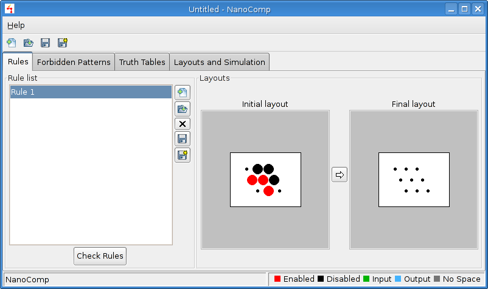
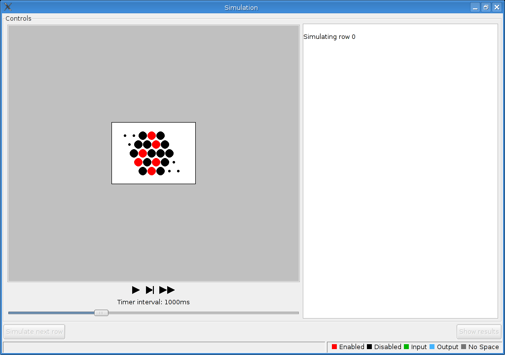

NanoComp
User Manual
Introduction
NanoComp is a visual and interactive simulator of molecule cascades. It has been developed by Bernat Ràfales Mulet as a final degree project for Computer Science at the Facultat d'Informàtica de Barcelona, Universitat Politècnica de Catalunya.
The program is released under the GNU/GPL license. It has been written in C++ and uses the wxWidgets library.
The project was supervised by Josep Carmona, as a member of the GAVINA (Group on
Algorithms for VLSI Design Automation) group.
Here you'll find the source file to compile the program, a user manual, a link to the CVS and the doxygen documentation of the source code.
This is the user manual for the
program. It starts with a full example showing what the program can do.
All the other features are exaplained lately.
Learning by example
We'll see a full example of a molecule cascade simulation. The logic
gate we'll implement is a simple fork. A fork is a duplication of an
input into more than one outputs.
The first thing we should do is start the program. You should see a window like this one:
First of all, we will create the main rule that the simulation will
use. Rules are pairs of configurations. When simulating, if the initial
configuration is found on the space, the rule is applied, and the
configuration becomes the final one.
To create a rule, you must click on the "Add a new rule button" .
After that, you must enter the width and the height of the rule. We
will create a typical rule in molecule cascades, a chevron. The chevron
is a 3x3 rule, so we will input a width and height values of 3, as
shown in those figures:
After that, an empty rule will be created. Our job is to modify it to
meet our requirements. Modifying the rule is as simple as clicking on
the cell point we want to change. The initial rule will be shown as
this:
As you can see, we have two 3x3 grids. Those little points are empty
cells. To modify them, we must click on them. It's status will change
with every click, so we must click the cell as many times as necessary
until it has the status we want.
We will start by modifying the left grid. This is the initial
configuration of the rule, and the pattern that will be searched in the
simulation. Click on each of the cells until you have this:

Now we have two ways to configure the right grid. We could just do the
same we 've already done, but there is a faster way: clicking on the
arrow button
all the cells on the left configuration will be copied to the right
one, so we will only have to modify the cells that actually differ from
configurations. Using the method you like, modify the final
configuration until you have this result:
Now we should create the forbidden pattern. To do so, we must click on
the "Forbidden Patterns" tab. We will see a screen like this one:
Just like we did for the rules, create a new forbidden pattern of size 3x3 and change its cells until you get this:

Time to configure the truth table. Click on the Truth Tables tab and
then on the new truth table button. This time you'll be asked for three
parameters rather than two: the table name, the table number of inputs
and the table number of outputs. As we are building a fork table, you
can name the table "Fork". The table will have one input and two
outputs, which will have to be the same value as the input:
The table will be created and you'll see a screen like this one:
As you can see, the table input combinations are already calculated by
the program. You only have to worry to configure the correct outputs
for each of the possible input combination. As we've said, this is a
fork, so the output values should match the input values. That means
that the two "False" values from the 2nd row must be changed to "True".
The way to do this is the same as we did for the cells: just click on
the cell you want to change and voilà... it'll change. Do this
until you get the two values to "True" as shown here:
And now for the final configuration tab, the "Layouts and Simulation"
tab. Click on the new Space button and select a 5x5 space. Select 1
input and 2 outputs, the same we did when creating the table. Now
change the space cells to fit those shown in this figure:
As you can see in the figure, the Fork table checkbox is checked. Check
it in your window too. This check will ensure that the fork table is
the one we are going to simulate. In the same way, the rule and pattern
we created will be automatically checked. Uncheck them if you don't
want them to be applied at the simulation.
Now that we have the space created and the table checked, there is only
one thing left to do: assign the inputs and outputs to the space. To do
this, you have to select the input/output you want to assign and then
click on the corresponding button. When you do this, the window will change like this (for an input):
At this moment, only the input cells will be available to click. When
you click on the cell, the input selected will be assigned there. If
you want to go back and not assign the input, just press the "Escape
key".
Now, assign the input and the outputs. As we only have an input and
both outputs share the values, its not important where you assign in.
The final window should look like this:
Now we are ready to simulate. Clicking on the "Check simulation" button
will check everything to ensure the simulation can start. Click it, and
then click on the "Begin simulation" button to actually start the
simulation. You'll see this window:

You can simulate in three different ways:
- Automated simulation
- Step by step simulation
- All in one step simulation
The automated simulation will execute simulation steps automatically
every second. You'll have to manually change rows, though. It's started
and paused clicking on the left button.
The step by step simulation is fully manual. You have to execute the steps manually by clicking the middle button.
The all in one step simulation will execute all the steps of every
table row without any king of user interaction. It's started with the
right button.
To see the simulator in action, press the automated simulation button
and watch. When a row finishes its execution, the simulation will stop
and ask you to simulate the next row; press the "Simulate next row" to
do so:
After that, press the automated simulation button again to begin the simulation of the new row.
After all rows have been simulated, the "Show results" button will be enabled; click on it to see the results of the simulation:
After pressing the button, the results view will be shown on the screen:

The results view shows four quarters:
- The simulation information provides information about the simulation steps os every row of the table.
- The truth table provides the truth table that has been simulated.
- The simulation step shows the simulation step selected in the simulation information.
- The initial configuration shows the initial space of the simulation with it's inputs and outputs.
Only the simulation information quarter is interactive. The results of
what you choose there will be shown in the simulation step.
The simulation information provides three columns:
- The first column contains all the rows of the table. Showing if
they were verified or not. Choosing one of the rows, the information on
the middle column will be updated.
- The middle column contains all the final status the simulation
has reached for the row. If it found a forbidden pattern or an out of
bounds rule, only that information will be shown. If not, it will show
all the stable spaces and cycles reached by the simulation. Selecting
one of the rows of that list, the right column will be updated.
- The last column contains all the simulation trace that lead to
the information you selected on the middle column. By selecting any of
the steps, the space of the step will be shown in the simulation step
quarter.